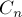
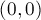
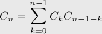
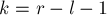
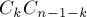
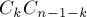
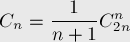

добавлено: DD MMM YYYY HH:MM
редактировано: DD MMM YYYY HH:MM
Числа Каталана
Числа Каталана — числовая последовательность, встречающаяся в удивительном числе комбинаторных задач.
Эта последовательность названа в честь бельгийского математика Каталана (Catalan), жившего в 19 веке, хотя на самом деле она была известна ещё Эйлеру (Euler), жившему за век до Каталана.
Последовательность
Первые несколько чисел Каталана  (начиная с нулевого):

Числа Каталана встречаются в большом количестве задач комбинаторики.
 -ое число Каталана — это:
-ое число Каталана — это:
- Количество корректных скобочных последовательностей, состоящих из
открывающих и закрывающих скобок.
- Количество корневых бинарных деревьев с
 листьями (вершины не пронумерованы).
листьями (вершины не пронумерованы). - Количество способов полностью разделить скобками
множитель.
- Количество триангуляций выпуклого
 -угольника
(т.е. количество разбиений многоугольника непересекающимися диагоналями на треугольники).
-угольника
(т.е. количество разбиений многоугольника непересекающимися диагоналями на треугольники). - Количество способов соединить
 точек на окружности
непересекающимися хордами.
точек на окружности
непересекающимися хордами. - Количество неизоморфных полных бинарных деревьев с
внутренними вершинами (т.е. имеющими хотя бы одного сына).
- Количество монотонных путей из точки 
в точку
.png) в квадратной решётке размером
в квадратной решётке размером
 , не поднимающихся над главной диагональю.
, не поднимающихся над главной диагональю. - Количество перестановок длины ,
которые можно отсортировать стеком (можно показать, что перестановка является сортируемой стеком тогда и
только тогда, когда нет таких индексов
 ,
что a_k
,
что a_k - Количество непрерывных разбиений множества из элементов
(т.е. разбиений на непрерывные блоки).
- Количество способов покрыть лесенку с помощью
прямоугольников
(имеется в виду фигура, состоящая из столбцов,
 -ый из которых имеет высоту
).
-ый из которых имеет высоту
).
Вычисление
Имеется две формулы для чисел Каталана: рекуррентная и аналитическая. Поскольку мы считаем, что все приведённые выше задачи эквивалентны, то для доказательства формул мы будем выбирать ту задачу, с помощью которой это сделать проще всего.
Рекуррентная формула

Рекуррентную формулу легко вывести из задачи о правильных скобочных последовательностях.
Самой левой открывающей скобке l соответствует определённая закрывающая скобка r,
которая разбивает формулу две части,
каждая из которых в свою очередь является правильной скобочной последовательностью.
Поэтому, если мы обозначим ,
то для любого фиксированного  будет ровно
 способов.
Суммируя это по всем допустимым
будет ровно
 способов.
Суммируя это по всем допустимым  ,
мы и получаем рекуррентную зависимость на .
,
мы и получаем рекуррентную зависимость на .
Аналитическая формула

(здесь через  обозначен, как обычно,
биномиальный коэффициент).
обозначен, как обычно,
биномиальный коэффициент).
Эту формулу проще всего вывести из задачи о монотонных путях. Общее количество монотонных путей в решётке
размером равно
 . Теперь посчитаем количество монотонных путей,
пересекающих диагональ. Рассмотрим какой-либо из таких путей, и найдём первое ребро,
которое стоит выше диагонали. Отразим относительно диагонали весь путь, идущий после этого ребра.
В результате получим монотонный путь в решётке
. Теперь посчитаем количество монотонных путей,
пересекающих диагональ. Рассмотрим какой-либо из таких путей, и найдём первое ребро,
которое стоит выше диагонали. Отразим относительно диагонали весь путь, идущий после этого ребра.
В результате получим монотонный путь в решётке
x(n+1).png) . Но, с другой стороны,
любой монотонный путь в решётке
обязательно пересекает диагональ, следовательно, он получен как раз таким способом из какого-либо
(причём единственного) монотонного пути, пересекающего диагональ,
в решётке . Монотонных путей в решётке
имеется C_{2n}^{n-1}.
В результате получаем формулу:
. Но, с другой стороны,
любой монотонный путь в решётке
обязательно пересекает диагональ, следовательно, он получен как раз таким способом из какого-либо
(причём единственного) монотонного пути, пересекающего диагональ,
в решётке . Монотонных путей в решётке
имеется C_{2n}^{n-1}.
В результате получаем формулу: